How a physical quantity becomes a number on a disk — and what is lost on the way.
An introduction to some biomechanics methodology. We will be using different equipment during this course, and the following is critical to appreciate how these devices quantify data.
To learn about some basics of:
Some important terms to look out for —
Everything in this lecture is one chain. A physical thing happens; a sensor turns it into a voltage; a run of electronics turns that voltage into numbers; software turns the numbers back into units you can write in a paper.
We will build this up one box at a time, and at each box ask the same question: what does this step throw away?
sensor — a device that measures a physical quantity and converts it into a signal which can be read by an observer or by an instrument.
The signal to which most sensors convert the quantities they are designed to sense is voltage.
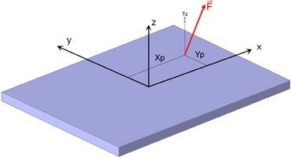
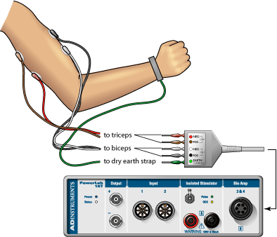
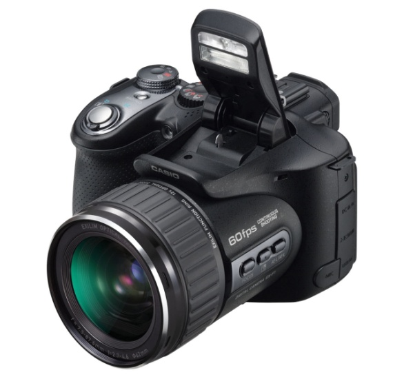
Some sensors commonly used in biomechanics — every one of them converts a physical value into an electronic signal, usually measured in volts (electrical potential).
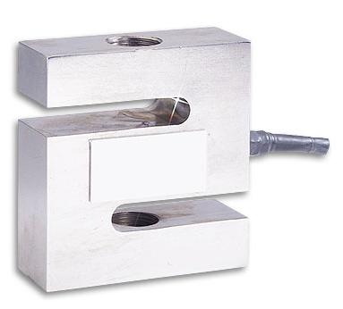
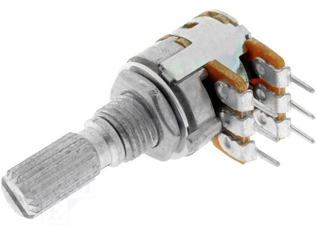
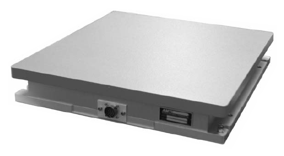
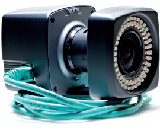
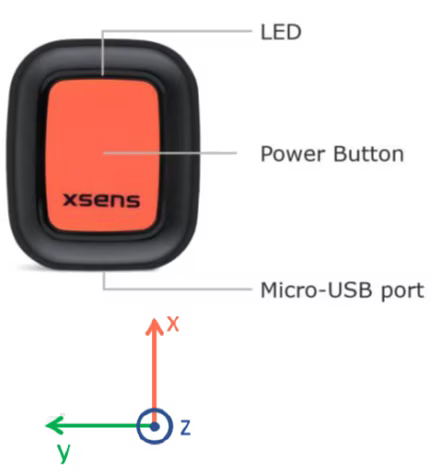
When necessary I may go into greater detail on how each sensor works — but for now all we need is that each one converts a physical value into an electronic signal.
It may be useful to talk about how a strain gauge works, to see how a physical signal becomes an electrical potential.
A strain gauge is really a specially designed resistive circuit attached to a malleable (bendable) object.
Here we have four resistive circuits attached to a bendable beam, to which a force will be applied.
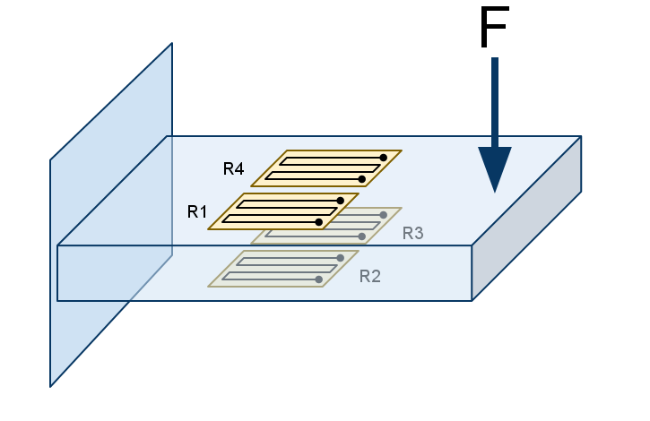
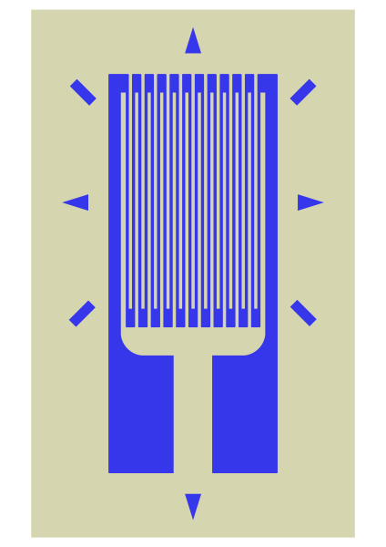
A current is passed in one end of the foil pattern and out the other. The resistance of that path is what the gauge reports.
Electrical current in →
…around a long, thin, folded conductor…
← Electrical current out
Stretch that conductor and it becomes longer and thinner, so the current has a harder time getting through: resistance goes up. Squash it and resistance goes down.
Current, voltage and resistance are tied together by Ohm’s law: V = I R. The gauge is the R — so a change in strain becomes a change in voltage, and that is the entire sensor.
When the strain gauge resistor is attached to the physical object and the object is bent, the resistor bends with it.
This allows the bend of the physical object to be related to a physical voltage.
As seen in B, if the gauge is in tension the electrical resistance to flow increases. In C, if the gauge is in compression the resistance decreases.
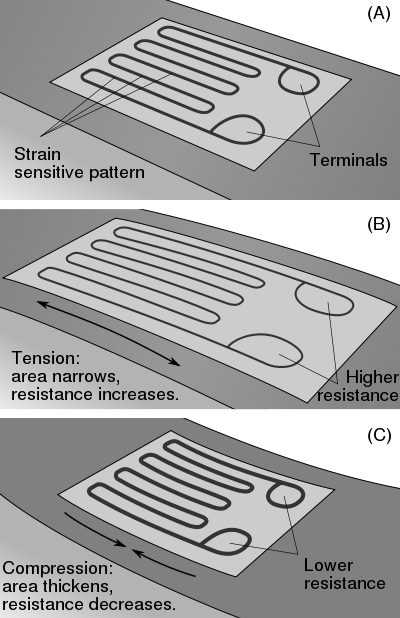
We could measure the voltage in conditions where the beam was compressed, in tension, or at rest — and we could watch it change as the force does.
signal — a physical quantity or effect that can be varied in such a way as to convey information. It can be either analog or digital (continuous or discrete, respectively).
An analog clock displays the time continuously; a digital clock displays only discrete points in time.
The resolution of the digital clock describes the interval between those points — the higher the resolution, the smaller the interval.
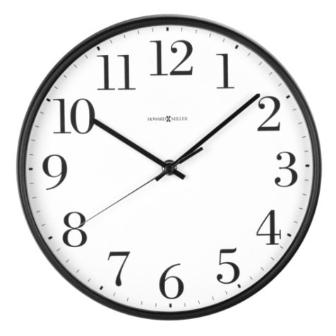
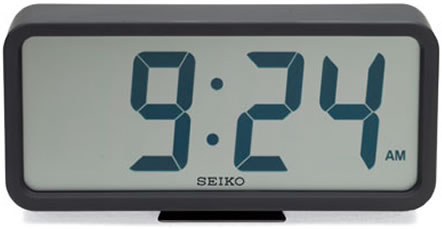
If a signal is analog it means there are no separations, based on time, between points in the signal.
If a signal is digital it means there are separations between points in the signal.
Use your eyes as an example. Viewing an activity without blinking gives you a continuous, connected representation. Now close and open your eyes every second, for a very short time — you are only able to see samples of the activity.
sampling — the process of converting a continuous signal into a digital signal (a numeric sequence). That is, “taking samples”.
Most physical signals are inherently continuous, but when we use sensors to quantify the data we must convert them to a discrete digital signal by taking discrete samples.
The sampling frequency is defined as the number of samples in one second, and is expressed in hertz (Hz).
12 Hz means twelve numbers per second, and 83 ms of the world that nobody wrote down between each pair of them.
calibration — the validation of specific measurement techniques and equipment: a comparison between measurements, one of known magnitude and another of unknown magnitude.
For a sensor’s output (usually voltage) to yield meaningful information, it must be calibrated to a known magnitude of the quantity being measured.
Using our strain gauge example again: when we use the sensor we have a value in volts — but what we really want is a measure in newtons. Nothing inside the instrument knows what a newton is.
1 volt = ? newtons
We could take the force transducer we used earlier and apply various known forces to it. Then we graph the value of the force against the voltage the sensor outputs.
If the relationship is linear, we can fit a linear equation to determine the force for any measured voltage. y is the voltage, m the slope, x the force and b the offset.
y = mx + b
Below are the applied force and voltage output pairs for a given sensor. Determine the slope and the offset.
| Applied force (N) | Voltage output (V) |
|---|---|
| 25 | 5.0 |
| 50 | 6.5 |
| 75 | 8.0 |
Hang each weight in turn, wait for the trace to settle and take a reading — the three rows below should come out as the three rows above.
By plotting the given data we can see the relationship is linear. The slope is the ratio of rise to run; the offset then comes from plugging a known pair into the equation for a line.
slope = ΔyΔx = 6.5 − 5.050 − 25 = 0.06 V/N
y = mx + b → 5 = (0.06)(25) + b
b = 3.5 V
With the slope and the offset we can determine the force for any voltage output — the sensor is said to be calibrated. Plug a measured voltage into the equation for a line, using our calculated slope and offset.
Record the three points first, then slide the voltage. The green lines are the arithmetic on the right, drawn.
e.g. for an output of 6 volts, the force would be:
y = mx + b
6 V = (0.06 V/N) x + 3.5 V
x = 41.6 N
If the relationship between applied force and voltage output is non-linear, the data are fitted to a polynomial equation.
In such cases we need more than just the slope and offset — we need the coefficients that describe the polynomial. This calibration equation can then be used to convert from a measured voltage to a force in newtons.
y = −0.1x² + 1.2x
The influence of the previous history of a system on its subsequent response to a given stimulus.
Hysteresis occurs when a different force-to-voltage relationship exists when the force is incrementally increased, compared with when it is incrementally decreased.
Hysteresis is undesirable because it would require different calibration coefficients — or different equations — for loading and unloading.
A gradual change in a transducer’s voltage output without an accompanying change in the applied force.
Drift can occur as a result of the transducer warming up, or as an effect of continued use.
If the drift is linear, the slope can be determined and the voltage output can be adjusted.
Throughout the figure the applied force is constant.
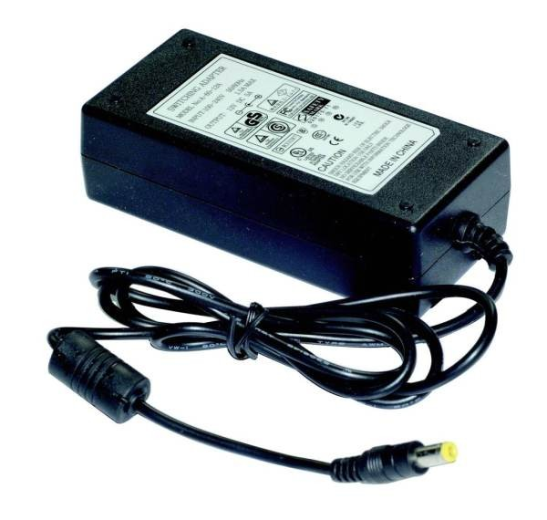
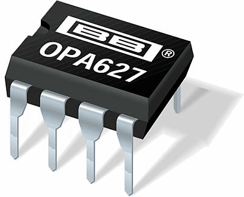
A sensor normally includes:
In biomechanics it is important to consider how we collect data and store it in the computer.
A wireless sensor does the first few boxes of the chain on board and sends numbers, not volts. Convenient — but the sampling rate, the range and the resolution were all decided by somebody else, before you switched it on.
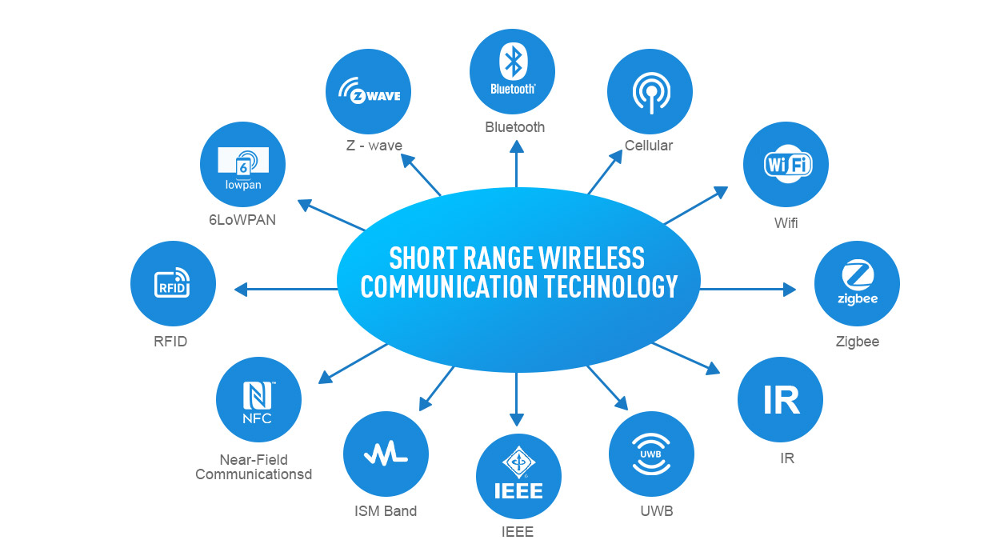
Each sensor gets a terminal on a break-out box, and everything leaves on one cable.
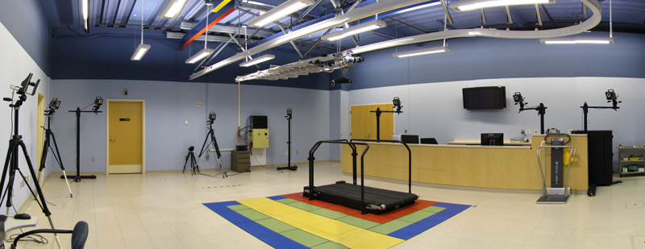
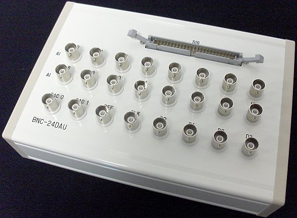
In most cases we need to record from more than one sensor at a time. However, DAQ units are not good at multitasking.
We could use one DAQ system for each signal being recorded — but there is a less expensive alternative: multiplexing.
Each connection to a multiplexer is called a channel.
The DAQ draws the first sample from the first sensor; the multiplexer then switches the circuit to receive a sample from the second sensor; once all connected sensors have been read, the multiplexer switches back to the first.
One problem with multiplexing is that the effective sampling rate is decreased — by a factor of the number of channels being multiplexed.
For example, consider a DAQ with the ability to draw 100 samples per second (100 Hz). If there are 8 sensors connected, the multiplexer will switch between the 8 channels, giving an actual sampling rate of
100 / 8 = 12.5 Hz
Each connection to a multiplexer is called a channel. The switch can only look at one of them at a time: it points at a channel, takes a sample, and moves on.
A second problem with multiplexing is that, since the samples are drawn sequentially, there is a delay between each one: the 8 samples are not drawn simultaneously.
This is called sampling skew, and it increases with the number of channels being sampled.
Toggle “Skew shown” to see it. With skew hidden, every channel appears to be sampled at the same instants — which is the comfortable assumption most analysis software quietly makes.
Voltages generated by sensors of physiological parameters are typically very small in amplitude — sometimes even after initial amplification.
The number of times that a signal’s amplitude is increased is called a gain.
DAQ systems usually come with preset choices of gain — e.g. ×1, ×10, ×100.
Noise is often introduced through the wires that bring the signal to the amplifier; a preliminary amplifier located close to the sensor is therefore often used.
Sample-and-hold circuit — it takes a picture.
The analog-to-digital converter works to divide the analog signal into discrete values: one value at each discrete time point.
The conversion of a given voltage into a discrete value takes a certain amount of time, during which the A/D tries to determine the number that most closely corresponds to the applied voltage.
To convert accurately, the voltage input must not change much — or the number produced by the A/D will not be an accurate reflection of the voltage.
The sample-and-hold circuit is responsible for ‘freezing’ the voltage signal while the A/D determines the correct numerical value — much like an artist takes a photograph to paint a moving scene.
The analog-to-digital converter makes up the most important component of a DAQ system. Its purpose is to turn a continuous, analog signal into a series of discrete numbers.
A/D converters are limited by three things:
All three limits, in one figure. Change one at a time and watch what the stored signal loses.
A/Ds can operate over only a specific range of voltages — e.g. 0 to 10 V, or −5 to +5 V.
If a voltage is applied beyond the upper or lower limits, the digitized signal will be truncated, or ‘clipped’.
This is why it is important to know how to amplify the signal.
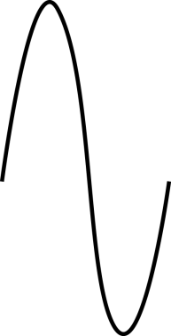
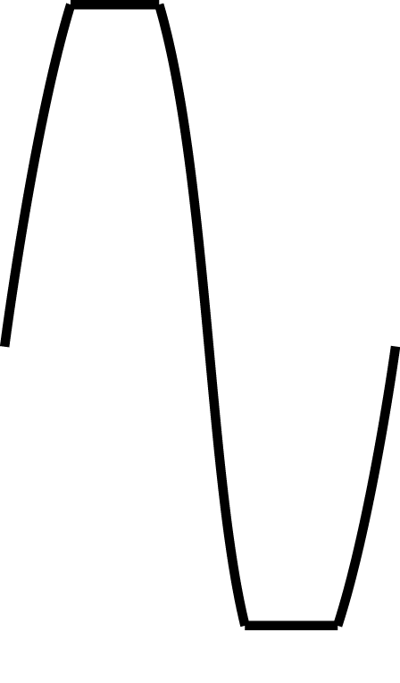
The magnitude resolution of an A/D is usually expressed in units of bits.
‘Bits’ is short for ‘binary digits’, and refers to information made up of digits that can exist in only one of two states — 0 or 1.
An 8-bit A/D has 256 (28 = 256) levels, meaning that 8 digits, or place-values, of either 1 or 0 are required to represent 256 individual numbers.
| Bits | Number of levels | |
|---|---|---|
| 8 | 28 = | 256 |
| 12 | 212 = | 4 096 |
| 16 | 216 = | 65 536 |
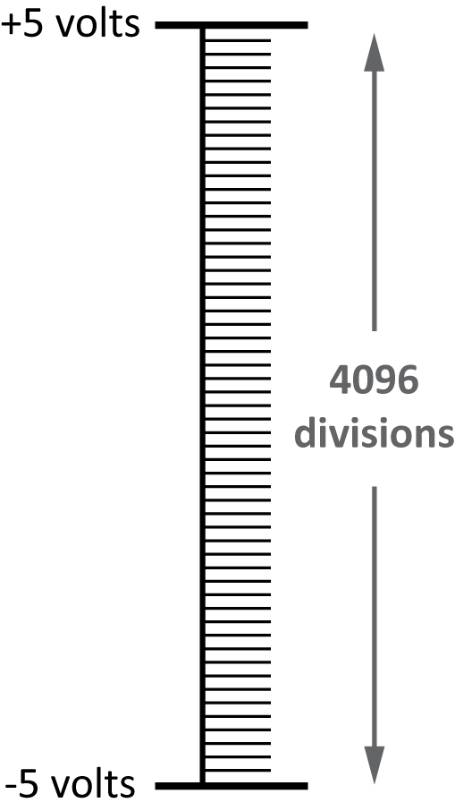
An A/D’s range is divided into a specific number of equal steps. The number of steps that divides the range is called the resolution.
A common number of steps is 4 096, meaning a given analog signal can be represented by any of 4 096 values between the limits of its range.
For example, if the voltage range is 0 to 10 V, the amplitude between each step is
10 / 4 095 = 0.002 44 V
A high resolution is desirable because it allows each sample to represent the analog signal at that point in time more precisely.
It does this by ensuring that the voltage input extends throughout as much of the range of the A/D as possible.
This increases the resolution of the sampled signal, by allowing the signal to be divided into more divisions.
The ideal gain is one that maximizes the range of the A/D, but that doesn’t result in clipping.
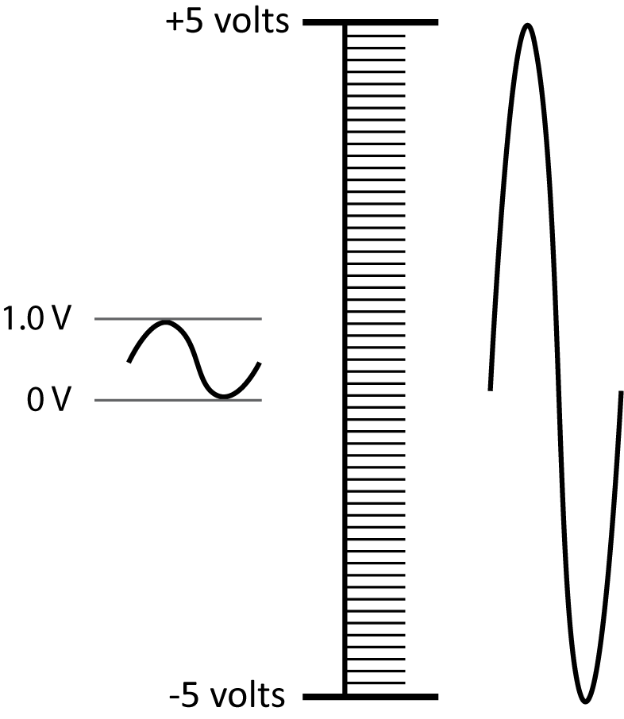
From the A/D, the digitized data — now in bits — are sent to a computer and stored in memory, such as a hard disk.
At this point the measurement is finished and everything that follows is arithmetic. Whatever the A/D threw away is gone for good: no amount of processing puts back a sample that was never taken, or a step that was too coarse.
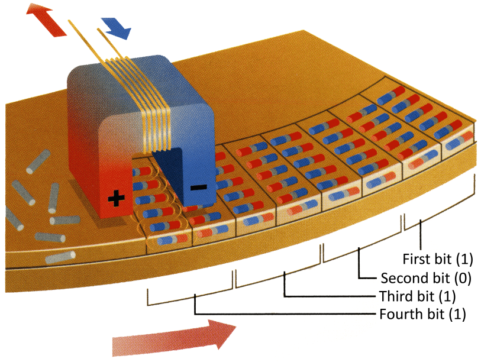
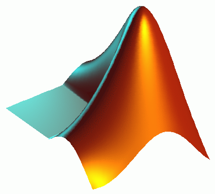
Sensor → break-out box → multiplexer → amplifier → sample-and-hold → A/D → storage and analysis software.
The aim of any software package used to process and analyze data is to perform many operations on digital signals very quickly. Examples include separating the signal into channels and converting the values into physical units of measurement.
Often the user will have many operations to carry out on a set of data. Lists of these operations can be written in the form of a program, in one of many languages.
We may go over some data processing examples using various programs.
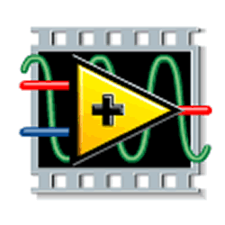